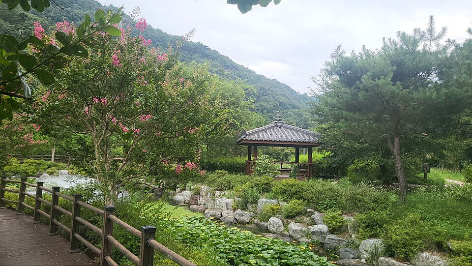

지역·대상별
화순 검정고시 — 자퇴 후 공백 없이 다시 시작하는 법

학교를 그만둔 뒤 “이제 뭘 해야 하지?” 하는 막막함이 가장 커요. 화순 검정고시 과외를 찾는 청소년과 부모님께 가장 먼저 드리는 말은, 자퇴가 끝이 아니라 다른 길의 시작이라는 거예요. 공백을 길게 만들지 않고 다시 출발하는 방법을 정리했습니다.
자퇴 직후, 공백이 길어지지 않게
- 생활 리듬부터 — 일어나는 시간·공부 시간을 정해 두면 학교가 없어도 하루가 무너지지 않아요.
- 작게 시작하기 — 처음부터 하루 종일이 아니라, 2~3시간으로 시작해 늘려 갑니다.
- 목표 회차 정하기 — “언제 볼 시험인지”가 정해지면 막막함이 계획으로 바뀝니다.
어디서 멈췄는지 먼저 확인
자퇴 시점에 따라 중졸 검정고시부터인지, 고졸 검정고시로 바로 가는지 달라져요. 과목도 마찬가지예요. 수학은 어느 단원에서 막혔는지, 영어는 문장을 읽을 수 있는지부터 확인하면 필요 없는 부분을 건너뛰고 빠르게 준비할 수 있습니다.
합격 뒤의 길도 넓어요
검정고시는 평균 60점 이상이면 합격이고, 고졸 학력을 갖추면 수능을 봐서 대학에 가거나 자격증·취업을 준비할 수 있어요. 학력을 먼저 마무리하고, 남는 시간을 진로 준비에 쓰는 청소년도 많습니다.
화순에서 이렇게 돕습니다
화순 검정고시를 혼자 준비하기 막막하다면, 저희는 학원·인강이 아닌 1:1 맞춤 과외로 함께해요. 학생이 멈춘 지점부터 시작하고, 낮 시간 화상(줌) 수업이나 방문 수업으로 생활 리듬까지 같이 잡아 드립니다. 부모님께는 진행 상황을 꾸준히 공유해 드려요.
학교 밖에서도 다시 시작할 수 있어요. 지금 학년과 멈춘 지점만 알려주시면, 합격까지의 계획을 무료로 짜 드립니다. 시험 일정은 뉴스 첫 화면의 일정 안내를 확인해 주세요.